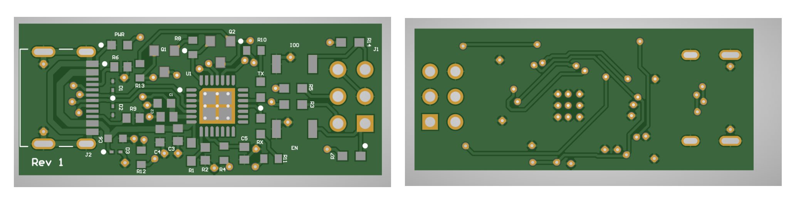
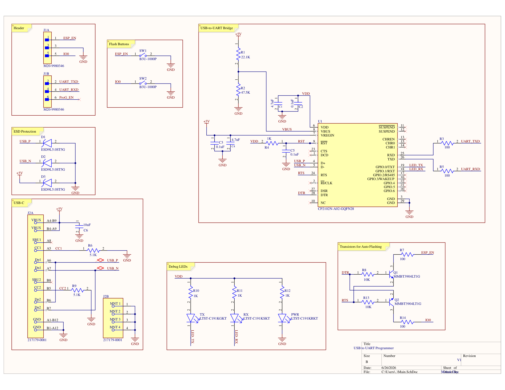

USB-to-UART Programmer
Altium · CP2102N · USB-C
A programmer board I designed during my internship to flash an ESP32-based system in one step. It plugs straight into a laptop like a USB stick, and it became the team's standard way to flash that system.
The problem
Before this, the team flashed the system using a Raspberry Pi Pico dev board jumpered over to a set of pogo pins. It worked, but it was slow and fiddly to set up, and needing a Pico for every person adds up. So I designed a dedicated programmer board that the pogo pins land on directly. The main layout challenge was keeping the USB differential pair short and clean on a board that small.

One-click flashing
An ESP32 only enters its serial bootloader if GPIO0 is held low while it comes out of reset, so doing it by hand means holding the boot button, tapping reset, and letting go at the right time. The board handles that on its own with a two-transistor circuit driven by the CP2102N's DTR and RTS lines. The flashing tool toggles those lines to pull GPIO0 low and pulse reset, which puts the chip in its bootloader, and then resets it back to normal once flashing is done. So nobody has to touch a button.
